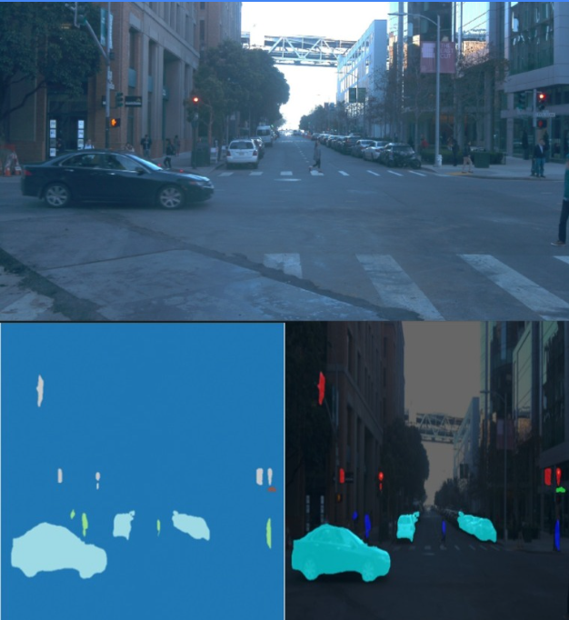
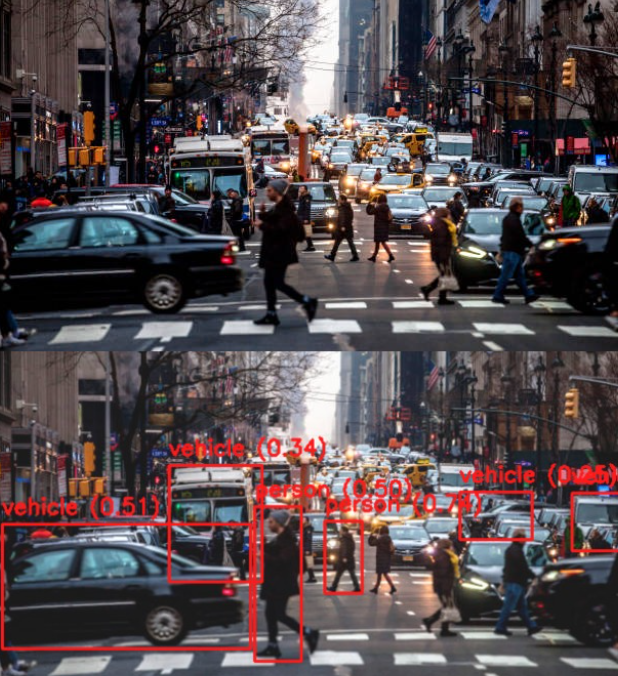

Exploring OBJECT DETECTION AND SEMANTIC SEGMENTATION ON ROAD SCENE DATASET


Project Overview
Explored deep learning techniques for road scene understanding in the context of autonomous driving. Focused on using YOLOv8 for real-time object detection and U-Net for semantic segmentation. The project aimed to compare and evaluate both approaches on a custom dataset derived from the Waymo Open Dataset to understand their effectiveness in structured road environments
YOLOv8
U-Net
Python
Roboflow
OpenCV
PyTorch
Technical Implementation
Dataset Creation:
- Built a custom dataset using Roboflow, annotated with five semantic classes: vehicles, pedestrians, road, traffic signals, and background
- Extracted and curated samples under varied lighting and occlusion conditions from the Waymo Open Dataset
YOLOv8 – Object Detection:
- Trained a YOLOv8 model to detect and localize vehicles, pedestrians, and traffic signals
- Fine-tuned hyperparameters for robustness across different scenes and weather conditions
U-Net – Semantic Segmentation:
- Implemented a U-Net architecture in PyTorch for dense pixel-wise classification of road scenes
- Applied data augmentation and class balancing to improve performance on minority classes like pedestrians and traffic lights
Results and Impact
YOLOv8 (Object Detection):
- mAP@0.5: 82.3%
- Precision: 85.1%
- Recall: 78.7%
- Demonstrated strong performance on vehicles and signals; slightly lower recall on small or occluded pedestrians
U-Net (Semantic Segmentation):
- Mean IoU: 76.4%
- Pixel Accuracy: 88.9%
- Accurately segmented roads and vehicles; some confusion between pedestrians and background in dense scenes
Provided valuable comparative insights:
- YOLOv8 excels at precise object localization and real-time use cases.
- U-Net offers granular scene understanding valuable for path planning and contextual reasoning in autonomous systems.